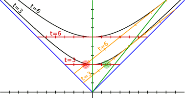
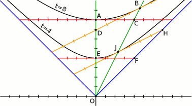
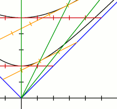
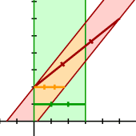

Относительность пространственных и временных интервалов
В этой части я хотел бы коснуться вопросов относительности времени, скоростей и длин. Я не буду здесь выводить формул (их можно найти в любой книжке по теории относительности), я хочу лишь наглядно показать, что все эти явления на прямую связаны со структурой пространства-времени.
Релятивистское замедление времени
Относительность одновременности
В свете всего вышеизложенного относительность одновременности уже очевидна. Её иллюстрирует следующая картинка:

Здесь изображены два наблюдателя: покоящийся и движущийся со скоростью 4/5.
С точки зрения покоящегося наблюдателя, через три секунды после старта, одновременно происходят два события, допустим вспышки красного и зелёного цвета (как показано на рисунке).
С точки зрения движущегося наблюдателя вспышки происходят совсем не одновременно. Зелёная происходит действительно через три секунды, а красная — ещё через три секунды (то есть через шесть секунд после старта).
Некоторые из чисел, зарегистрированных наблюдателями, совпадают чисто случайно (я их выбрал для удобства расчётов, возможно вы захотите их проверить самостоятельно).
Конечно из-за эквивалентности всех инерциальных систем отсчёта точно также возможна и симметричная ситуация: то, что одновременно для движущегося наблюдателя, не одновременно для покоящегося.
Релятивистское замедление времени
Тот факт, что в движущейся системе отсчёта время замедляется (с точки зрения покоящегося наблюдателя), прекрасно виден из уже знакомого нам рисунка:

Из него видно, что когда покоящийся наблюдатель проходит точку A, его часы покажут 8 секунд. В это время в его одновременном пространстве движущийся наблюдатель будет находиться в точке C. Однако часы движущегося наблюдателя покажут 8 секунд только когда он достигнет точки B. То есть в точке C часы будут показывать время меньшее, чем 8 секунд.
То есть покоящийся наблюдатель обнаружит, что движущиеся часы замедляются.
Строго говоря, покоящийся наблюдатель, находясь в точке A не может увидеть часы, находящиеся в точке C. Для этого ему понадобился бы сигнал, распространяющийся с бесконечной скоростью. Однако покоящийся наблюдатель всё же может (в будущем) установить, что показывали часы в точке C, когда его собственные часы показывали 8 секунд. Это делается с помощью хитроумной процедуры обмена световыми сигналами.
Недоступность будущего
Здесь уместно сделать важную оговорку. На первый взгляд может показаться, что движущийся наблюдатель может заглянуть в будущее и прошлое покоящегося. Действительно, одновременное пространство движущегося наблюдателя наклонено относительно покоящегося. Впереди (по направлению движения) оно уходит в будущее, а позади — в прошлое.
Несмотря на то, что это чистая правда, заглянуть в будущее и прошлое таким образом невозможно. Далее будет показано, что максимальная скорость распространения любых сигналов не может превышать скорость света. Конечно, некое событие, ещё не произошедшее в одновременном пространстве покоящегося наблюдателя, возможно уже произошло в одновременном пространстве движущегося наблюдателя. Но узнать об этом событии наблюдатели смогут только тогда, когда до них дойдёт некий сигнал, свидетельствующий о том, что событие имело место быть. Этот сигнал не может распространяться быстрее света, а скорость света универсальна для всех наблюдателей. Это уравнивает их шансы и не позволяет заглядывать в будущее.
Релятивистское сложение скоростей
Чтобы понять природу сложения скоростей, нам придётся рассмотреть двух наблюдателей и некое тело.
На рисунке показаны два наблюдателя: покоящийся и движущиеся со скоростью 1/2. Для них построены одновременные пространства. Так же на рисунке изображена мировая линия движущегося тела (самая правая зелёная линия).

Из рисунка видно, что для покоящегося наблюдателя движущийся имеет скорость 1/2 (за две секунды он проходит одну единицу). Тело же перемещается со скоростью 1/2 для движущегося наблюдателя. Чтобы в этом убедиться посмотрите на систему движущегося наблюдателя. Через две секунды после старта (по движущимся часам), тело прошло одну единицу (в пространстве движущегося наблюдателя).
С какой скоростью тело будет двигаться для покоящегося наблюдателя? Классическая (Ньютоновская) механика говорит, что скорости следует просто сложить и тело должно двигаться со скоростью света (в наших единицах измерения — просто 1/2+1/2=1).
Однако из-за специфики пространства времени, как видно из рисунка, для покоящегося наблюдателя тело будет двигаться со скоростью 4/5. Посмотрите: через пять секунд по неподвижным часам тело пройдёт 4 единицы (в пространстве неподвижного наблюдателя).
Релятивистское сокращение длинны
Для описания сокращения длины нам надо рассмотреть отрезок.
На следующем рисунке показаны «мировые линии» отрезков (вернее, линиями показаны мировые линии концов отрезков, а закрашенные области — это совокупность всех линий всех точек отрезков). Зелёный отрезок неподвижен, красный движется.

Оба отрезка имеют длину 3 единицы в собственных одновременных пространствах. Но как вы видите, в одновременном пространстве покоящегося наблюдателя длина движущегося отреза кажется меньше. Она показана оранжевым отрезком.
Как вы видите, сокращение длины на прямую связано с относительностью одновременности. Покоящийся пользователь фиксирует начало и конец отрезка одновременно со своей точки зрения. Однако в движущейся системе фиксация начала и конца происходят не одновременно.
С точки зрения наблюдателя, движущегося вместе с отрезком, покоящийся наблюдатель производит измерения длины «не правильно» и конечно получает «не правильный» результат.